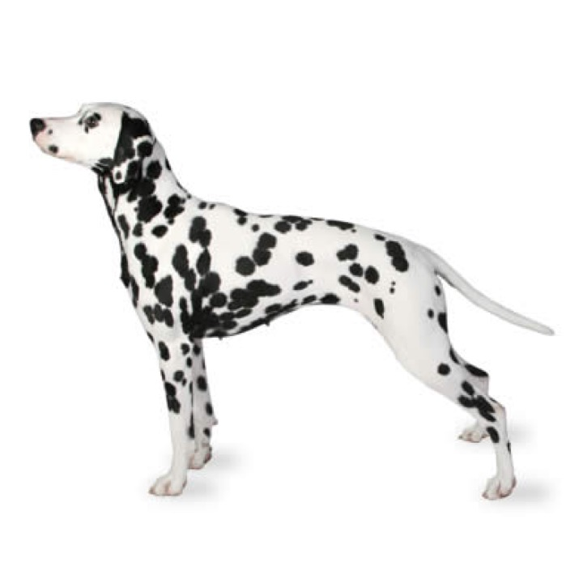
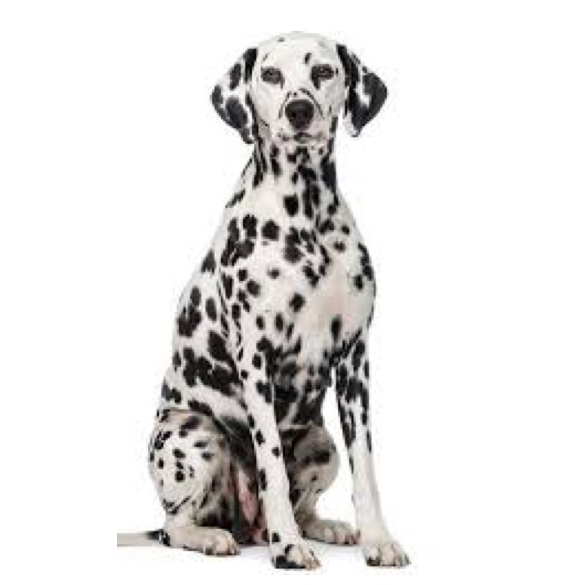
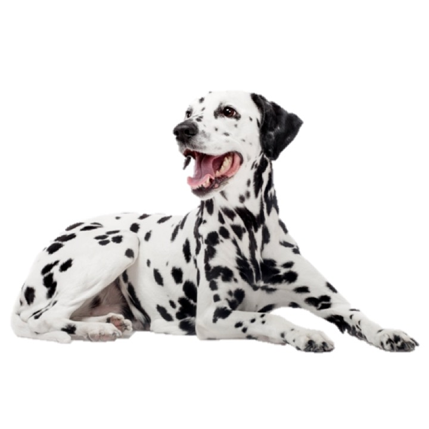

<!DOCTYPE html>
<html>
    <head>
       <script src="jspsych-6.3.1/jspsych.js"></script> 
       <script src="jspsych-6.3.1/plugins/jspsych-html-button-response.js"></script>
	   <link rel="stylesheet" href="jspsych-6.3.1/css/catAct.css">
       <link rel="stylesheet" href="jspsych-6.3.1/css/jspsych.css">
    </head>
    <body>
    </body>
        
    <script>

        var timeline = [];

        var shuffled_sample_array = [];
        var shuffled_grid_array = [];

        var grid_image_width = 150;
        var grid_image_height = 150;

        var grid_image_names = ["stims/animals/subordinate/grid/temp_c3_sub6.png", "stims/animals/subordinate/grid/c3_sub7.jpg", "stims/animals/basic/grid/c3_bas4.jpg", "stims/animals/basic/grid/c3_bas3.jpg", "stims/animals/superordinate/grid/c3_sup4.jpg", "stims/animals/superordinate/grid/c3_sup3.jpg", "stims/animals/superordinate/grid/c3_sup5.jpg", "stims/animals/superordinate/grid/c3_sup6.jpg",
        "stims/vegetables/subordinate/grid/temp_c1_sub6.png", "stims/vegetables/subordinate/grid/temp_c1_sub7.png", "stims/vegetables/basic/grid/c1_bas3.jpg", "stims/vegetables/basic/grid/c1_bas4.jpg", "stims/vegetables/superordinate/grid/c1_sup2.jpg", "stims/vegetables/superordinate/grid/c1_sup3.jpg", "stims/vegetables/superordinate/grid/c1_sup4.jpg", "stims/vegetables/superordinate/grid/c1_sup5.jpg",
        "stims/vehicles/subordinate/grid/c2_sub6.jpg", "stims/vehicles/subordinate/grid/temp_c2_sub7.png", "stims/vehicles/basic/grid/c2_bas2.jpg", "stims/vehicles/basic/grid/c2_bas4.jpg", "stims/vehicles/superordinate/grid/c2_sup2.jpg", "stims/vehicles/superordinate/grid/c2_sup4.jpg", "stims/vehicles/superordinate/grid/c2_sup5.jpg", "stims/vehicles/superordinate/grid/c2_sup6.jpg"];

        var sampling_image_names = ["stims/animals/subordinate/grid/c3_sub7.jpg", "stims/animals/basic/grid/c3_bas3.jpg", "stims/animals/superordinate/grid/c3_sup3.jpg", "stims/vegetables/subordinate/grid/temp_c1_sub6.png", "stims/vegetables/basic/grid/c1_bas4.jpg", "stims/vegetables/superordinate/grid/c1_sup3.jpg", "stims/vehicles/subordinate/grid/c2_sub6.jpg", "stims/vehicles/basic/grid/c2_bas2.jpg", "stims/vehicles/superordinate/grid/c2_sup6.jpg"];
        
        var sampling_image_words = [];

        var shuffled_sampling_images = jsPsych.randomization.repeat(sampling_image_names, 1);
        // does randomizing actually need to happen or is it more helpful to have them "in order"?
        for (var i = 0; i < shuffled_sampling_images.length; i++) {
            shuffled_sample_array.push('')
            if (shuffled_sampling_images[i] == "stims/animals/subordinate/grid/c3_sub7.jpg")
               sampling_image_words[i] = "wug";
            else if (shuffled_sampling_images[i] == "stims/animals/basic/grid/c3_bas3.jpg")
                sampling_image_words[i] = "toma";
            else if (shuffled_sampling_images[i] == "stims/animals/superordinate/grid/c3_sup3.jpg")
                sampling_image_words[i] = "dax";
            else if (shuffled_sampling_images[i] == "stims/vegetables/subordinate/grid/temp_c1_sub6.png")
                sampling_image_words[i] = "beppo";
            else if (shuffled_sampling_images[i] == "stims/vegetables/basic/grid/c1_bas4.jpg")
                sampling_image_words[i] = "zeevo";
            else if (shuffled_sampling_images[i] == "stims/vegetables/superordinate/grid/c1_sup3.jpg")
                sampling_image_words[i] = "tesser";
            else if (shuffled_sampling_images[i] == "stims/vehicles/subordinate/grid/c2_sub6.jpg")
                sampling_image_words[i] = "sibu";
            else if (shuffled_sampling_images[i] == "stims/vehicles/basic/grid/c2_bas2.jpg")
                sampling_image_words[i] = "deela";
            else if (shuffled_sampling_images[i] == "stims/vehicles/superordinate/grid/c2_sup6.jpg")
                sampling_image_words[i] = "blicket";
        };

        var shuffled_images = jsPsych.randomization.repeat(grid_image_names, 1);

        for (var i = 0; i < shuffled_images.length; i++) {
            shuffled_grid_array.push('')
        }
        
       // var training_image_names_array = [];
       //var training_image_width = 200;
      //  var training_image_height = 200;

       // var training_image_names = ["stims/animals/subordinate/training/c3_sub1.jpg", "stims/animals/subordinate/training/c3_sub2.jpg", "stims/animals/subordinate/training/c3_sub3.jpg"]

        //^for loop for training images from an array to be able to randomize order(?)

        var subject_response ="";
        var number_response ="";

        var sampling_trial = {
            type: 'html-button-response',
            stimulus: 
            '<p><b><font size="6.5">These are 3 wugs.</font></b><style="text-align:center;" /p><div class="row"><div class="column"></div><div class="column"></div><div class="column"></div><div class="column"></div></div><p><b><font size="6.5">wug wug wug</font></b></p><p><b><font size="6.5">Your job is to figure out which objects are wugs and which are not.</font></b><style="text-align:center;" /p> <p><b><font size="6.5">Which of these objects would you like to learn the name of?</font></b><style="text-align:center;" /p><div class="row"><div class="column">',
            //really needs to be centered
                choices: shuffled_sample_array,
                
            on_finish: function(data) {
                subject_response = shuffled_sampling_images[data.response];
                number_response = data.response;
                console.log(subject_response);
                console.log(data);
                console.log(number_response);
            }
        }
        timeline.push(sampling_trial);
       

   console.log(subject_response);


   var test_trial = {
       type: 'html-button-response',
       stimulus: 
           '<p><b><font size="6.5">These are 3 wugs and 1 '+sampling_image_words[number_response]+'.</font></b><style="text-align:center;" /p><div class="row"><div class="column"></div><div class="column"></div><div class="column"></div><div class="column"></div></div> <p><b><font size="6.5">Your job is to figure out which objects are wugs and which are not.</font></b><style="text-align:center;" /p> <p><b><font size="6.5">Which of these objects would you like to learn the name of?</font></b><style="text-align:center;" /p><div class="row"><div class="column">',
       choices: shuffled_grid_array,
       //response_ends_trial: false,
       on_start: function(trial) {
         //if (sampling_image_words[number_response] !== "wug")
            trial.stimulus = '<p><b><font size="6.5">The image you selected is a '+sampling_image_words[number_response]+'.</font></b><style="text-align:center;" /p><div class="row"><div class="column"></div><div class="column"></div><div class="column"></div><div class="column"></div></div><p><b><font size="6.5">wug wug wug '+sampling_image_words[number_response]+'</font></b></p><p><b><font size="6.5">Your job is to figure out which objects are wugs and which are not.</font></b><style="text-align:center;" /p> <p><b><font size="6.5">Now, pick all of the wugs.</font></b><style="text-align:center;" /p><div class="row"><div class="column">';
        // else if (sampling_image_words[number_response] == "wug")
           // trial.stimulus = '<p><b><font size="6.5">These are 4 wugs.</font></b><style="text-align:center;" /p><div class="row"><div class="column"></div><div class="column"></div><div class="column"></div><div class="column"></div></div> <p><b><font size="6.5">Your job is to figure out which objects are wugs and which are not.</font></b><style="text-align:center;" /p> <p><b><font size="6.5">Now, pick all of the wugs.</font></b><style="text-align:center;" /p><div class="row"><div class="column">';  
            console.log(trial.stimulus)
       }

   }
   timeline.push(test_trial);

   var test_trial_2 = {
       type: 'html-button-response',
       stimulus: 
           '<p><b><font size="6.5">These are 3 wugs and 1 '+sampling_image_words[number_response]+'.</font></b><style="text-align:center;" /p><div class="row"><div class="column"></div><div class="column"></div><div class="column"></div><div class="column"></div></div> <p><b><font size="6.5">Your job is to figure out which objects are wugs and which are not.</font></b><style="text-align:center;" /p> <p><b><font size="6.5">Which of these objects would you like to learn the name of?</font></b><style="text-align:center;" /p><div class="row"><div class="column">',
       choices: shuffled_grid_array,
       //response_ends_trial: false,
       on_start: function(trial) {
         //if (sampling_image_words[number_response] !== "wug")
            trial.stimulus = '<p><b><font size="6.5">The image you selected is a '+sampling_image_words[number_response]+'.</font></b><style="text-align:center;" /p><div class="row"><div class="column"></div><div class="column"></div><div class="column"></div><div class="column"></div></div><p><b><font size="6.5">wug wug wug '+sampling_image_words[number_response]+'</font></b></p><p><b><font size="6.5">Your job is to figure out which objects are wugs and which are not.</font></b><style="text-align:center;" /p> <p><b><font size="6.5">Now, pick all of the wugs.</font></b><style="text-align:center;" /p><div class="row"><div class="column">';
        // else if (sampling_image_words[number_response] == "wug")
           // trial.stimulus = '<p><b><font size="6.5">These are 4 wugs.</font></b><style="text-align:center;" /p><div class="row"><div class="column"></div><div class="column"></div><div class="column"></div><div class="column"></div></div> <p><b><font size="6.5">Your job is to figure out which objects are wugs and which are not.</font></b><style="text-align:center;" /p> <p><b><font size="6.5">Now, pick all of the wugs.</font></b><style="text-align:center;" /p><div class="row"><div class="column">';  
            console.log(trial.stimulus)
       }
   }
   timeline.push(test_trial_2);

   /*var test_multi_select = {
       type: 'survey-multi-select',
       questions: [
           {
               prompt: "the image you selected is a wug select all the other wugs",
               options: shuffled_grid_array,
           }
       ]
   }
   timeline.push(test_multi_select); */
   
    jsPsych.init({
       timeline: timeline,
       on_finish: function(){jsPsych.data.displayData();}
    });

    // make >1 choice at test
    // submit button

    </script>
</html>